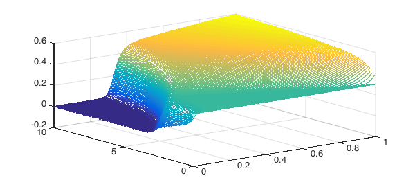

The Auzerais, Jackson, Russel equation [1] describes how particles suspended in a liquid sediment to the bottom of a chamber under centrifugation. Eventually the particles will settle to a steady-state profile. However we need to know the time-dependence of the process. Thus we have to solve a PDE.
This equation is stiff, and the initial conditions do not match with the boundary conditions, which usually causes issues. We weren't able to solve this with Mathematica, so we turned to Chebfun, (Note we use the option 'AdjustBCs', false in the call the pdeset below.)
Define parameters:
pe = 200; % Peclet number
phi_m = 0.64; % Close packing fraction
time_end = 10; % Time to stop the simulation
u_init = 0.3; % Initially, the concentration of particles is uniform
% everywhere. u is the particle concentration.
Solving the AJR equation: $$ u_t + [ (1-u)^{6.55} (u - (1.85/pe) \phi_m u' / (\phi_m-u)^2) ]' = 0, $$ for $x$ in $[0, 1]$ and $t$ in $[0, \mathrm{time}_{\mathrm{end}}]$, subject to $$ u - \frac{1.85}{100}\frac{\phi_m u'}{(\phi_m-u)^2} = 0 $$ at $x$ = 0 and $x$ = 1 (no flux out of particles out of the top or bottom of the chamber).
$\phi_m$ represents the close-packing fraction of particles, i.e., the concentration at which they jam Pe represents the Peclet number. This tells you the relative importance of centrifuge velocity vs diffusion. When the Peclet number is large, you spin very hard, and all the particles will pack down at the bottom of the vial. When the Peclet number is small, particle diffusion away from the bottom of the vial means that particles are more evenly spread.
The following code is modified slightly from the Chebgui export option.
% Create an interval of the space domain,
dom = [0, 1];
% and a discretisation of the time domain.
t = 0:.1:time_end;
% Make the rhs of the PDE.
pdefun = @(u) -diff((1-u).^6.55.*(u-1./pe.*1.85.*phi_m./(phi_m-u).^2.*diff(u)));
% Assign boundary conditions.
bc.left = @(u) -u + 1./100.*1.85.*phi_m./(phi_m-u).^2.*diff(u);
bc.right = bc.left;
% Construct a linear chebfun on the domain,
x = chebfun(@(x) x, dom);
% and of the initial condition.
u0 = chebfun(u_init, dom);
% Setup preferences for solving the problem.
opts = pdeset('Ylim', [0, 1], 'AdjustBCs', false);
% Solve the problem using PDE15S.
[t, u] = pde15s(pdefun, t, u0, bc, opts);
% Create plot of the solution.
waterfall(u, t, 'LineWidth', 2)

By playing with the Peclet number, we see all the behaviour that we'd expect. When Pe = 200, we get a sharp front as the particles are tightly packed down at the bottom of the cell, with nothing left at the top of the cell. When Pe = 20, the particles diffuse across the cell so that there is a linear concentration gradient.
Reference:
- "The resolution of shocks and the effects of compressible sediments in transient settling", Auzerais, Jackson & Russel, J Fluid Mech, (1988).